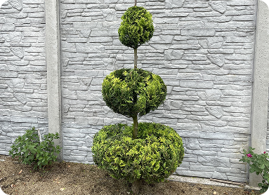
Санітарна стрижка
Раз на сезон вирівнюємо форму й очищаємо рослину: прибираємо сухі гілки та зайвий приріст, що збив силует.
Приймаю замовлення на сезон
Формую живоплоти, кулі та спіралі з туї, самшиту й падуба — від першого креслення форми до щорічного догляду за нею.
Топіарій — мистецтво надавати живим рослинам чітку форму: кулі, спіралі, арки, фігури. Тут немає миттєвого результату: форма проявляється поступово, і перші чіткі обриси видно лише через кілька сезонів терпеливого догляду. Натомість замість разової стрижки ви отримуєте живу скульптуру, яка з роками стає дедалі виразнішою.
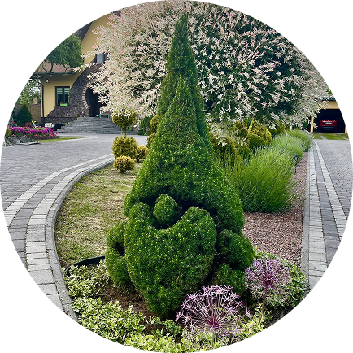

Раз на сезон вирівнюємо форму й очищаємо рослину: прибираємо сухі гілки та зайвий приріст, що збив силует.
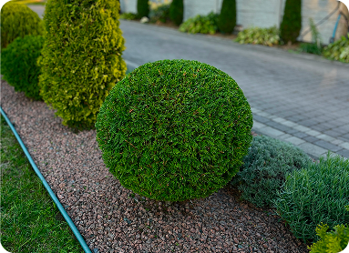
Тримаємо ідеально круглу форму й симетрію кулі під час кожного планового візиту.
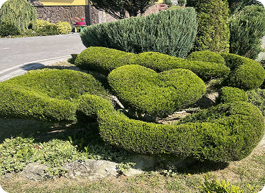
Надаємо кроні чіткого силуету — конуси, арки, фігурні форми за шаблоном або на око, під ваш задум.
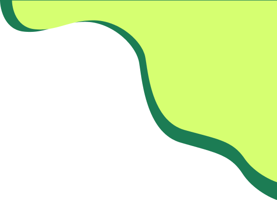
Оцінюємо ділянку, стан і особливості рослин. Обговорюємо побажання, створюємо ескіз або підбираємо точний шаблон і затверджуємо його перед початком робіт.
Ретельно вичищаємо середину крони: видаляємо сухе й пошкоджене гілля, торішню хвою та відмерлі пагони, відкриваючи доступ світлу й повітрю.
Вирізаємо задуману форму вручну за допомогою професійного інструменту, покроково контролюючи геометрію, симетрію та лінії з усіх ракурсів.
Прибираємо ділянку після стрижки, даємо рекомендації з поливу й підживлення та складаємо графік візитів, щоб крона тримала форму і залишалася здоровою.
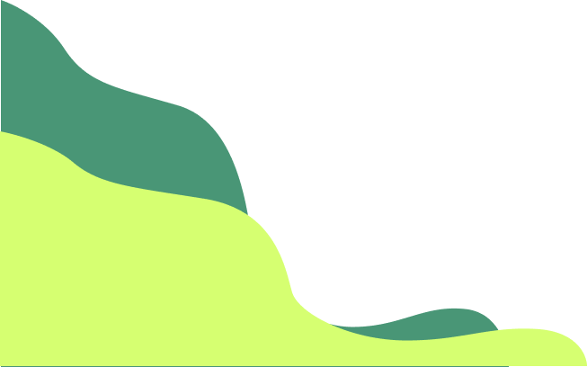
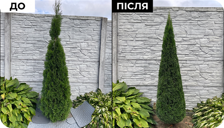
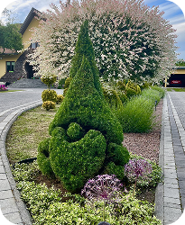
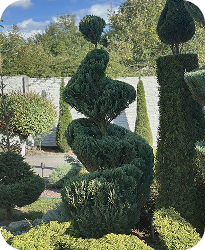
«Двір виглядає як у ботанічному саду. Приїжджають за графіком, і форма завжди в порядку.»
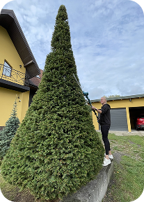
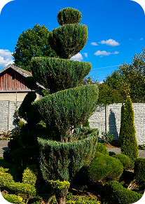
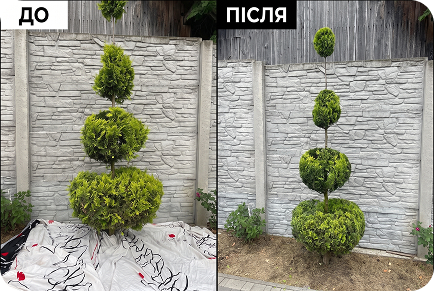
«Взяли занедбаний живопліт і привели у форму за два сезони. Тепер тільки річна підписка.»
Регулярний догляд допомагає зберігати чіткі силуети, здоровий вигляд і акуратність топіарних рослин протягом усього сезону.
Окремий візит для тих, кому потрібно надати рослинам охайної форми або освіжити вже наявну.
Два планові візити на місяць — щоб підтримувати форму рослин акуратною протягом сезону.
Для садів із великою кількістю топіарних рослин і складними формами, що потребують уваги.
| Пакет | Візитів | Що входить | Ціна |
|---|---|---|---|
| Разовий візит | 1 | Огляд, формувальна стрижка, видалення сухих гілок | 1500 ₴ / візит |
| Регулярний догляд | 2 на місяць | Підтримка форми, контроль стану рослин, пріоритетний запис | 3000 ₴ / місяць |
| Преміум-догляд | до 4 на місяць | Складні форми, сезонне коригування | 5500 ₴ / місяць |
*Вартість залежить від кількості, розміру та складності форм. Остаточна ціна узгоджується після огляду ділянки.
Ірина Параняк займається топіарним мистецтвом понад 10 років. Вчилася колоніальній стрижці у Франції, а тепер формує сади по всій Львівській області — від приватних двориків до готельних територій.
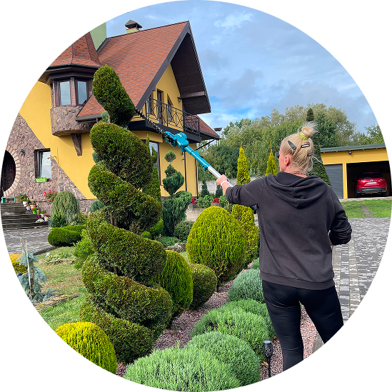
Залиште контакти — менеджер зв'яжеться з вами, щоб дізнатися більше
про ваш сад і запропонувати оптимальний догляд.
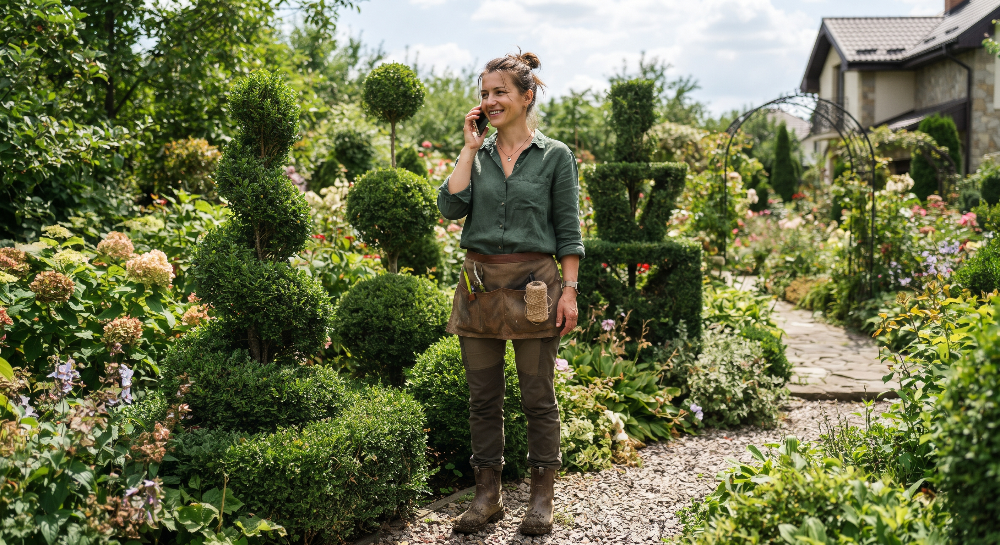